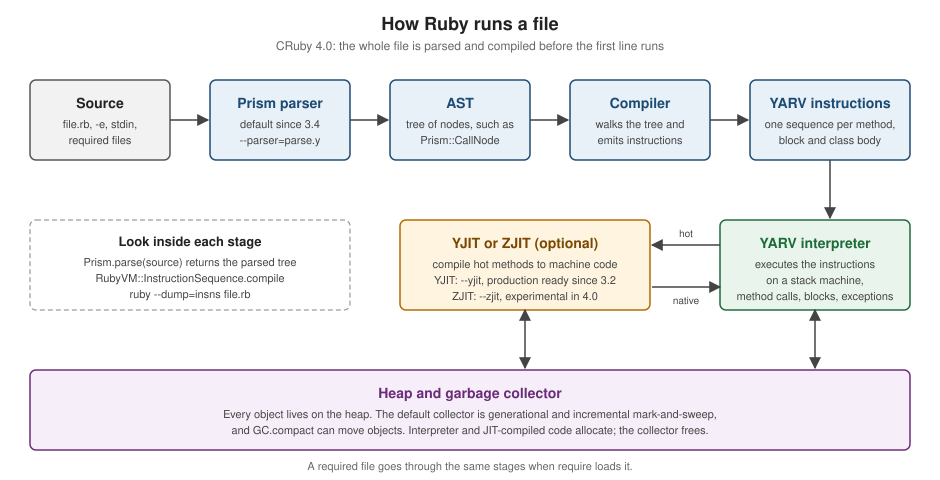

Getting Started
|
This content was generated with the assistance of AI and should be verified against the official documentation before being relied on in production. |
This page is written against Ruby 4.0 (4.0.7, released 2026-09-15) and was checked on 2026-10-18. Ruby 4.1 is not out yet: the newest thing on ruby-lang.org is 4.1.0-preview1, so every feature on this page that is newer than Ruby 3.0 names the version that introduced it. The page gets a working Ruby onto your machine, runs a first program in several ways, tours the language the way an experienced Rubyist would write it, shows how to read what Ruby tells you when something goes wrong, follows a file through the interpreter, and sets up an editor. The next page, Versions, Releases and Compatibility, explains the release cycle and what a version number promises, and Program Structure and Lexical Elements starts the language reference proper.
Every example on this page was run with Ruby 4.0.7 on arm64-darwin23 (macOS on Apple silicon), the Ruby files pass
ruby -wc and run without warnings, and the Ruby files are clean under RuboCop with the configuration of the shelf
scenario (Ruby 4.0 as the target version, double-quoted strings). Outputs that mention the platform, a home directory or an
absolute path differ on your machine; the home directory is shortened to ~ where it appears. The shelf library
catalogue is the running scenario of this whole section: a small gem with an Isbn value object, a Book and an Author,
a thread-safe Catalog, a Loan driven by pattern matching and an exe/shelf command. This page uses its first pieces and
shows the files at the end; the shelf gem source has their full listings.
What Ruby is for
Ruby is a dynamic, object-oriented, garbage-collected language that is interpreted by a virtual machine, designed by Yukihiro "Matz" Matsumoto and first released publicly in 1995. The official description on ruby-lang.org stresses simplicity and productivity, and Matz has repeatedly said that the goal was to make programmers happy rather than to make the machine fast. Everything you work with is an object, code is organised with classes and modules, and blocks (small pieces of code passed to a method) are the main way to customise behaviour. The page Design Philosophy and Coming from Other Languages takes these ideas apart.
| Domain | Typical uses |
|---|---|
Web back ends |
HTTP applications and APIs on top of Rack, with frameworks such as Ruby on Rails, Sinatra and Hanami. Rails is outside the scope of this section; see Ruby Reference for where its material would go |
Scripting and automation |
one-off scripts, file and text processing, glue between command-line tools, build tasks with Rake (see Command-Line Programs and Creating and Publishing Gems, and Rake) |
DevOps and developer tooling |
Homebrew, fastlane, CocoaPods, Vagrant, Jekyll, Chef and Puppet are Ruby programs, and
their configuration files (a |
Command-line tools |
gems that ship an executable, parsed with |
Data processing |
reading and transforming CSV, JSON and YAML, scraping, report generation, ETL jobs (see Serialization: JSON, YAML, CSV and Marshal) |
Domain-specific languages |
test frameworks, build files and configuration files that read like a small language because of optional parentheses and blocks (see Hooks, eval and DSLs) |
The reference implementation is called CRuby (also MRI, "Matz’s Ruby Interpreter"), and it is what "Ruby" means in this section. JRuby, TruffleRuby and mruby are separate implementations; they are introduced in Versions, Releases and Compatibility. Ruby is free software, released under the Ruby license and the two-clause BSD license (see the license text on ruby-lang.org), so it can be used, copied, modified and distributed without fees.
If you come from another language, the comparison pages on this site are good companions: the Python getting-started page covers the language Ruby is most often compared with, and the Go and Rust pages show how compiled languages approach the same first steps. The first one with a package manager and a build step that resembles Bundler is PHP with Composer.
Source: ruby-lang.org: About Ruby
Ruby as a tool language
Many developers meet Ruby without choosing it, because a tool they use is written in Ruby or configured with Ruby files. Those files are ordinary Ruby: knowing the language makes them readable and debuggable. Pages elsewhere on this site show them in real projects:
-
a CocoaPods
Podfile(Ruby) in an iOS project, in Objective-C Build and Tooling and Integrating Shared Code into iOS -
a fastlane
Fastfile(Ruby) with lanes for building and uploading apps, in CI/CD and Over-the-Air Updates and in CI/CD for KMP with GitHub Actions -
the Ruby helper that React Native adds to a native iOS project, in Brownfield Integration
-
a Homebrew formula, a small Ruby class describing how to install a command-line tool, in Packaging & Distribution
This section does not re-explain those files; it gives you the language underneath them.
The community and how Ruby evolves
Ruby is developed in the open. The ruby/ruby repository holds the interpreter, the core classes and the default gems,
and the issue tracker at bugs.ruby-lang.org is where bugs, feature requests and design discussions live. A feature is
proposed as a ticket with a use case, discussed there and in the core developers' meetings, and accepted or rejected by
Matz; accepted features are implemented on the development branch and listed in the NEWS file of the next release. Ruby has
shipped a new minor or major release every 25 December for years, with patch releases in between that carry only bug and
security fixes. The cadence, the maintenance phases of each branch and the proposal process are described in
Versions, Releases and Compatibility.
The community is spread over mailing lists, the Ruby Discord server, local user groups, blogs, newsletters and podcasts, and the ruby-lang.org community page keeps the current list. RubyKaigi, RubyConf and many regional conferences publish their talks, which rubyevents.org collects. Ruby Central is a non-profit organisation that supports the worldwide community and organises RubyConf.
Source: ruby-lang.org: Community
Installing Ruby
There is no single official installer for every platform. The page ruby-lang.org/en/documentation/installation lists the options and says plainly that the version managers and installers on it are third-party tools: they are not officially supported by the Ruby core team, and help comes from their own communities. The ones in the table below are therefore labelled as community tools; they are widely used, but they are not part of Ruby.
| Route | Tools | Choose it when |
|---|---|---|
Operating-system package manager |
|
you want the simplest install and any recent Ruby is fine; the packaged version is often older than the newest release |
Installer (builds or unpacks one Ruby) |
community: ruby-build, ruby-install; RubyInstaller for Windows |
you need an exact version, or several versions side by side |
Version manager (switches between installed Rubies) |
community: rbenv, chruby, asdf, mise, RVM |
you work on projects that need different Rubies and want the right one selected per directory |
Build from source |
|
no other route exists for your platform, or you need custom build options |
Whichever route you pick, finish with a check that the Ruby on your PATH is the one you meant:
$ ruby -v
ruby 4.0.7 (2026-09-15 revision 229531a6cf) +PRISM [arm64-darwin23]
$ which ruby
~/.local/share/mise/installs/ruby/4.0/bin/rubySource: ruby-lang.org: Installing Ruby
ruby -v prints the version (4.0.7), the release date, the source revision, a list of build features in +FEATURE
form and the platform. +PRISM says that the parser is Prism, the default since Ruby 3.4; a Ruby started with --yjit
adds +YJIT to the line. which ruby (or where ruby on Windows) shows which installation answers to ruby, which is
the first thing to look at when two Rubies fight over the PATH.
The Ruby that came with your system
Do not use it for development. macOS still ships a Ruby, and it is very old:
$ /usr/bin/ruby -v
ruby 2.6.10p210 (2022-04-12 revision 67958) [universal.arm64e-darwin26]
$ /usr/bin/gem -v
3.0.3.1Ruby 2.6 has been end-of-life since 2022, the macOS copy cannot run a modern gem or any Ruby 3 or 4 syntax (it does not
know Data, endless methods, the it parameter or the hash shorthand {x:, y:}), and sudo gem install against it
changes files that belong to the operating system. Many Linux distributions also package an old Ruby, and the official page
warns that the packaged version may not be the newest one. Install your own Ruby with one of the routes below, and keep the
system one for the system’s own scripts.
Source: ruby-lang.org: Installing Ruby
Package managers
If you cannot or do not want to compile Ruby, use the package manager of your system. These are the commands the official installation page documents:
$ sudo apt-get install ruby-full # Debian, Ubuntu
$ sudo yum install ruby # CentOS, Fedora, RHEL
$ sudo pacman -S ruby # Arch Linux
$ brew install ruby # macOS, with Homebrew
$ sudo snap install ruby --classic # Ubuntu and other distributions with snap
> winget install RubyInstallerTeam.Ruby.4.0 # Windows, Windows Package Manager
> choco install ruby # Windows, ChocolateySource: ruby-lang.org: Installing Ruby
The winget identifier on that page is RubyInstallerTeam.Ruby.{MAJOR}.{MINOR}, and the page illustrates it with 3.2;
substitute the release you want and run winget search RubyInstallerTeam.Ruby to list the available ones. Homebrew’s ruby
formula currently provides Ruby 4.0.7, but on macOS the system /usr/bin/ruby still answers to ruby unless Homebrew’s
bin directory comes before /usr/bin in your PATH; check with which ruby after installing. Package-manager Rubies install gems into
system directories, so run gem install for your user (gem install --user-install) or, better, work inside Bundler so
that you do not need to install gems globally at all (see
RubyGems and Bundler).
RubyInstaller for Windows
On Windows, RubyInstaller is the usual choice. It is a community-maintained installer that is linked from ruby-lang.org. It
comes in two flavours: the plain installer is enough for pure Ruby gems and for gems that ship precompiled binaries, and
the "with DevKit" installer adds an MSYS2 and MinGW toolchain so that gems with C extensions can be compiled while they are
installed. The installer also gives you the ridk command, which installs MSYS2 components and sets the environment for the
development tools in the current shell. Windows 10 and 11 users can instead use the Windows Subsystem for Linux
and follow the Linux instructions inside it, which is the closest match to the production environment of most Ruby
applications.
Source: RubyInstaller for Windows
Installers: ruby-build and ruby-install
Installers compile or unpack one Ruby version into a directory of your choosing. Both are community tools.
ruby-build (from the rbenv project) works as a plugin for rbenv, where it provides the rbenv install command, or as the
standalone ruby-build command:
$ brew install ruby-build # one way to get it; see the README for others
$ ruby-build --list # latest stable release of each Ruby
$ ruby-build 4.0.7 ~/.rubies/ruby-4.0.7 # install a version into a directorySource: ruby-build
ruby-install (from the chruby author) installs into ~/.rubies/ for a normal user and into /opt/rubies/ for root, and
takes the Ruby name and version as arguments:
$ ruby-install --update # refresh the list of Rubies it knows
$ ruby-install ruby 4.0 # newest 4.0.xBoth compile Ruby, so you need the build dependencies of your platform first (a C compiler, make, and the development
headers for OpenSSL, libyaml, zlib and readline are the usual list; both projects document the exact packages for each
system). To build a Ruby with YJIT support from source you also need the Rust compiler; the YJIT guide states a minimum
rustc version, and building ZJIT requires Rust 1.85.0 or later (see How Ruby runs a file).
Source: ruby-build, ruby-install
Version managers
A version manager lets several Rubies coexist and selects one per shell or per directory. All of the following are community tools, listed (not endorsed) by ruby-lang.org. They differ in how they select a Ruby and what they change in your shell:
| Tool | How it works | Selects the version from |
|---|---|---|
puts shims (small wrapper executables) first on |
|
|
a small shell function that changes |
|
|
a general version manager for many tools; Ruby comes from the asdf-ruby plugin, which uses ruby-build |
|
|
a general tool manager that needs no other tool to install Ruby; it downloads a precompiled CRuby where one exists for your platform and falls back to ruby-build |
|
|
a large shell-integrated manager that also offers gemsets, separate sets of gems per Ruby; it changes your shell start-up files and carries its own installer |
|
The commands you use daily are short in all of them. These are the documented forms for installing the newest 4.0 release and choosing it for the current project (the tools differ, so the commands are shown side by side rather than as one session):
# rbenv (with ruby-build)
rbenv install 4.0.7 && rbenv local 4.0.7
# chruby (with ruby-install); chruby only switches
ruby-install ruby 4.0 && chruby ruby-4.0
# asdf (with the asdf-ruby plugin)
asdf plugin add ruby https://github.com/asdf-vm/asdf-ruby.git
asdf install ruby 4.0.7 && asdf set ruby 4.0.7
# mise
mise use ruby@4.0
# RVM
rvm install 4.0 && rvm use 4.0 --defaultThe toolchain used to check this page is mise, which is why the outputs show its install paths. mise ls ruby and
mise exec show the idea of a version manager in two lines: several Rubies are installed, and a command can be run with
the one you name without changing anything else.
$ mise ls ruby
ruby 3.4.11
ruby 4.0.7
$ mise exec ruby@4.0 -- ruby -v
ruby 4.0.7 (2026-09-15 revision 229531a6cf) +PRISM [arm64-darwin23]Source: mise: Ruby
Pick one version manager and uninstall the others, or disable their shell hooks. Two managers that both rewrite PATH
produce the confusing situation where ruby -v and gem env disagree, and the first fix is always which -a ruby to
see every candidate in PATH order.
Pinning the version of a project: .ruby-version and the Gemfile
A project records the Ruby it needs in a .ruby-version file, a one-line text file next to the code:
4.0.7Source: rbenv README
Most managers read it (see the table above), and so do editors and CI actions. Bundler has its own, stricter declaration, the
ruby line of the Gemfile, which makes bundle install fail on a different Ruby:
# frozen_string_literal: true
source "https://rubygems.org"
ruby "4.0.7"Source: Bundler: Gemfile
The two have different jobs: .ruby-version tells tools which Ruby to switch to, and the Gemfile line is a safety check
that stops a mismatched install. A gemspec constrains Ruby with required_ruby_version, as the shelf gem does with
">= 4.0". All three are covered in
Versions, Releases and Compatibility.
Building from source
When nothing else works, download a tarball from ruby-lang.org, unpack it and build:
$ ./configure
$ make
$ sudo make installBy default this installs under /usr/local; pass --prefix=DIR to ./configure to install elsewhere, for example into your
home directory so that you do not need sudo. The official page notes that a Ruby built this way is not managed by any
tool, which is why an installer or version manager is usually the better choice.
Source: ruby-lang.org: Installing Ruby
Where gems go
Ruby asks RubyGems where it keeps gems. gem env home is where gem install writes by default, and gem env gempath lists
every directory searched. With a version manager the install directory belongs to your user, so you do not need sudo:
$ gem env home
~/.local/share/mise/installs/ruby/4.0.7/lib/ruby/gems/4.0.0
$ gem env gempath
~/.gem/ruby/4.0.0:~/.local/share/mise/installs/ruby/4.0.7/lib/ruby/gems/4.0.0Source: RubyGems: Command reference
The directory name ends in 4.0.0 for every 4.0.x patch release: the library directory is versioned by ABI, not by patch.
If gem install complains about permissions, that is the sign of a system Ruby; fix the Ruby you use instead of adding
sudo.
The commands that come with Ruby
A Ruby installation puts a handful of executables on your PATH. These are the ones in a stock Ruby 4.0.7 bin directory
(the shelf scenario’s tools such as rubocop and rspec appear only if you install their gems):
| Command | What it does |
|---|---|
|
the interpreter: runs a file, an inline script or standard input |
|
Interactive Ruby, the read-eval-print loop (REPL); see IRB, ri and the playgrounds |
|
reads the documentation of core classes, standard-library classes, methods and installed gems in the terminal |
|
RubyGems: installs, lists and publishes gems (see RubyGems and Bundler) |
|
Bundler: resolves and installs the gems a project declares in its |
|
a make-like task runner whose build files are Ruby |
|
generates HTML documentation from comments (see Documentation with RDoc and YARD) |
|
expands ERB templates from the command line |
|
tools for type signatures (see Type Checking with RBS, TypeProf, Steep and Sorbet) |
|
the command-line front end of the |
|
the parser generator, and the tool that explains a missing |
The core language and the library are split into core classes (always loaded, such as Integer or Array), the
standard library of files you require, default gems (libraries shipped with Ruby that you can update with RubyGems) and
bundled gems (gems installed with Ruby but not loaded unless required and, under Bundler, listed in the Gemfile). On Ruby
4.0.7 irb, rdoc, rake, rbs, minitest, debug and reline are bundled gems, while bundler, prism,
error_highlight and did_you_mean are default gems. This is the reason that older code or books saying "Benchmark and
Logger are part of the standard library" need updating: both are bundled gems in Ruby 4.0 (see
What older material gets wrong).
Source: NEWS for Ruby 4.0.0
ruby: running code
ruby runs code from a file, from the command line or from standard input. These are the forms you will use first:
$ ruby -e 'puts "Hello, world!"'
Hello, world!
$ ruby -e 'puts 1' -e 'puts 2'
1
2
$ echo 'puts __FILE__' | ruby
-
$ ruby hello.rb
Hello, world!Source: Ruby command-line options
-e 'code' runs the string as a program, and may be repeated (the pieces are joined by newlines). With no file and no -e,
Ruby reads the program from standard input, and __FILE__ is then -. A script receives the rest of the command line in the
ARGV array, and $PROGRAM_NAME (also $0) holds its name.
The options you will meet in the first week:
| Option | Meaning |
|---|---|
|
print the version and set |
|
check the syntax and exit without running anything (prints |
|
warnings on ( |
|
enable or, as |
|
run the code on the command line |
|
add a directory to the front of the load path ( |
|
|
|
change to a directory before running |
|
wrap the program in a |
|
|
|
edit the files named on the command line in place, keeping a backup when an extension is given |
|
turn |
|
ignore everything before a |
|
look the script up in the directories of |
|
set |
|
enable a JIT compiler (see How Ruby runs a file) |
|
turn a feature such as |
|
choose the parser; Prism is the default since Ruby 3.4 |
|
print the instruction sequences instead of running (see How Ruby runs a file) |
Source: Ruby command-line options
ruby --help prints the same list, and the environment variables that change Ruby’s behaviour (RUBYOPT, RUBYLIB,
RUBY_YJIT_ENABLE, GEM_HOME and others) are collected in
Ruby Command Line and Environment. A few of the
options in use, with real output:
$ printf 'ruby basics\nmetaprogramming\n' | ruby -ne 'puts $_.upcase if $_ =~ /ruby/'
RUBY BASICS
$ printf 'a b c\nd e f\n' | ruby -lane 'puts $F[1]'
b
e
$ printf 'ruby basics\n' | ruby -pe '$_.capitalize!'
Ruby basics
$ ruby -I shelf/lib -rshelf -e 'puts Shelf::VERSION'
0.1.0
$ ruby -C /tmp -e 'puts Dir.pwd'
/private/tmp
$ ruby -s -e 'p $verbose' -- -verbose=yes
"yes"Source: Ruby command-line options
(/private/tmp is macOS’s real path for /tmp.) A script also communicates through its exit status, which shells and CI
systems read: 0 means success, 1 is what an uncaught exception or abort produces, and exit n returns your own code.
$ ruby -e 'exit 3'; echo "exit=$?"
exit=3
$ ruby -e 'raise "boom"'; echo "exit=$?"
-e:1:in '<main>': boom (RuntimeError)
exit=1
$ ruby -e 'abort "no config"'; echo "exit=$?"
no config
exit=1Source: Kernel#exit
irb, ri, gem and bundle at a glance
irb is where you try things (see the next section), ri is the offline manual, gem manages libraries globally and
bundle manages the libraries of one project. Their first commands:
$ irb -v
irb 1.16.0 (2025-12-17)
$ ri --version
ri 7.0.4
$ gem -v
4.0.20
$ bundle -v
4.0.20
$ gem list --local rake
rake (13.3.1)Source: RubyGems: Command reference
RubyGems and Bundler share the version number 4.0.20 here because Ruby 4.0 bundles RubyGems 4 and Bundler 4. The
Bundler guide describes the project workflow, and bundle init is its first command: it writes a starter Gemfile and
nothing else.
$ mkdir proj && cd proj
$ bundle init
Writing new Gemfile to ~/proj/Gemfile
$ cat Gemfile
# frozen_string_literal: true
source "https://rubygems.org"
# gem "rails"Source: Bundler: bundle init
The full workflow (bundle install, the Gemfile.lock, bundle exec, groups, bundler/inline single-file scripts) is
in RubyGems and Bundler.
Hello, world!
A Ruby program is a text file, conventionally ending in .rb, and there is no main function, no class and no build step:
the statements of the file run from top to bottom.
# frozen_string_literal: true
puts "Hello, world!"Run it with ruby:
$ ruby hello.rb
Hello, world!Source: Kernel#puts
puts is a method of Kernel, called without a receiver and without parentheses: Ruby lets you drop the parentheses when
a call is unambiguous, which is why puts "Hello, world!" reads like a statement of a small language. It writes its
argument followed by a newline. Its two cousins are worth knowing from the start: print writes without the newline, and
p writes the inspect form of its argument (the form meant for programmers: quotes around strings, brackets around
arrays) and returns the argument, which makes it handy for peeking inside an expression. The first line,
# frozen_string_literal: true, is a magic comment: it makes every string literal in the file frozen (immutable). It is
not required, but it is the convention of this section and of RuboCop’s default configuration, and
Program Structure and Lexical Elements
explains it with the other magic comments. Ruby 3.4 also introduced chilled string literals that warn when mutated;
see Literals.
Ways to run the same program
$ ruby hello.rb # a file
$ ruby -e 'puts "Hello, world!"' # an inline program
$ ruby < hello.rb # standard input
$ irb # interactively, one expression at a timeSource: Ruby command-line options
The first line of a script may be a shebang that tells a Unix-like system which interpreter to use, which makes the file
runnable as a command once it has execute permission. #!/usr/bin/env ruby finds the Ruby that is first on PATH, so
it follows your version manager:
#!/usr/bin/env ruby
# frozen_string_literal: true
name = ARGV.fetch(0, "reader")
puts "Hello, #{name}!"
puts "(#{$PROGRAM_NAME} was run by Ruby #{RUBY_VERSION})"$ chmod +x greet.rb
$ ./greet.rb
Hello, reader!
(./greet.rb was run by Ruby 4.0.7)
$ ./greet.rb Ada
Hello, Ada!
(./greet.rb was run by Ruby 4.0.7)Source: Global variables
ARGV holds the command-line arguments as strings, ARGV.fetch(0, "reader") returns the first argument or a default
(fetch with a default does not raise, unlike ARGV.fetch(0)), and "#{...}" interpolates the value of any
expression into a double-quoted string. RuboCop’s Lint/ScriptPermission cop checks that a file with a shebang has
the execute permission, which is the reason for the chmod. On Windows the shebang is ignored; you run ruby greet.rb or
use the file association that RubyInstaller creates.
With the -x option Ruby skips everything before a #!ruby line, so a Ruby program can live inside another file, such as a
shell script or an email:
$ cat x.sh
#!/bin/sh
echo prefix
#!ruby
puts 1+1
__END__
trailing
$ ruby -x x.sh
2Source: Ruby command-line options
__END__ ends the Ruby code of the file; whatever follows can be read through the DATA constant (see
Program Structure and Lexical Elements).
A program of several files
A program that grows past one file splits into files that load each other. require_relative loads a file relative to the
file that calls it, so it works whatever the current directory is:
# frozen_string_literal: true
module Greeting
def self.for(name) = "Hello, #{name}!"
end# frozen_string_literal: true
require_relative "lib/greeting"
puts Greeting.for(ARGV.fetch(0, "reader"))The first file is app/lib/greeting.rb, the second app/main.rb. Run main.rb from inside its directory and from another
directory:
$ cd app && ruby main.rb
Hello, reader!
$ cd /tmp && ruby ~/app/main.rb Ada
Hello, Ada!Source: Kernel#require_relative
The tempting alternative, require "lib/greeting", does not do what it looks like. require with a bare name searches the
load path, a list of directories, and the current directory is not on it:
# frozen_string_literal: true
require "lib/greeting"
puts Greeting.for("reader")$ ruby main_require.rb
main_require.rb:3:in 'Kernel#require': cannot load such file -- lib/greeting (LoadError)
from main_require.rb:3:in '<main>'
$ ruby -I. main_require.rb
Hello, reader!Source: Kernel#require
-I. adds the current directory to the load path and the second run succeeds, but the file then works only when started from
the right directory. Use require_relative for files of your own program and require for libraries and gems. The whole
mechanism ($LOAD_PATH, $LOADED_FEATURES, load, autoload) is in
Code Loading: require and autoload.
IRB, ri and the playgrounds
IRB
irb (Interactive Ruby) reads an expression, evaluates it and prints the result after =>. It is the fastest way to learn
a method, test a regular expression or inspect an object. IRB 1.16, the bundled gem in Ruby 4.0.7, starts with the prompt
irb(main):001>. The transcript below was made with irb --simple-prompt, which shortens the prompt to >>, so that it
fits a page:
$ irb --simple-prompt
>> "Hello, world!"
=> "Hello, world!"
>> puts "Hello, world!"
Hello, world!
=> nil
>> [3, 1, 2].sort
=> [1, 2, 3]
>> title = "ruby basics"
=> "ruby basics"
>> title.capitalize
=> "Ruby basics"
>> {title: title, pages: 120}
=> {title: "ruby basics", pages: 120}
>> undefined_thing
(irb):7:in '<main>': undefined local variable or method 'undefined_thing' for main (NameError)Source: IRB documentation
Three things in that transcript are worth noting. A line that prints something, like puts, shows the output and then
=> nil, because every expression has a value and puts returns nil. A string evaluates to itself, and the
last value of a session is available as _. And the hash is printed in the Ruby 3.4 inspect format, {title: "ruby basics", pages: 120},
where the older one was {:title=>"ruby basics", :pages=>120}; it matters when you compare output with old tutorials. The
real transcript printed a few more lines of backtrace under the error (paths inside the IRB gem), which are omitted above.
IRB has its own commands, listed by help. These are the ones to try first:
| Command | What it does |
|---|---|
|
list every command, or describe one with |
|
show the methods, constants and variables of the current object |
|
look up documentation with RI, for example |
|
open a file or a method’s source location in your editor |
|
show the input history, with |
|
print the time each expression takes; |
|
start the debugger of the |
|
move into an object, so that |
|
copy the result of an expression to the clipboard |
|
leave IRB |
Source: IRB documentation
IRB is covered fully in IRB and Debugging, including binding.irb,
which opens an IRB session inside a running program at that line.
ri
ri shows the same documentation as docs.ruby-lang.org without leaving the terminal and without a network connection, in
the format of the installed Ruby. Name a class, a method or both:
$ ri --no-pager --format=markdown Array#sum
# Array#sum
(from ruby core)
---
sum(init = 0) -> object
sum(init = 0) {|element| ... } -> object
---
With no block given, returns the sum of `init` and all elements of
`self`; for array `array` and value `init`, equivalent to:(The output continues with examples.) Array#sum names the instance method sum of Array, and Array.new would name a
class method; this Class#method / Class.method convention is the one used in all Ruby documentation and error messages.
ri -l lists every class and module that has documentation, ri --interactive starts a lookup prompt with completion, and
--no-pager keeps the output in the terminal instead of a pager. Gems that ship RDoc documentation can be looked up the same
way once their documentation has been generated.
Source: RDoc: ri
Tutorials and playgrounds
-
Ruby in Twenty Minutes on ruby-lang.org is the official short tutorial. It walks through IRB, basic expressions, methods, blocks and classes in four short pages, and it assumes Ruby is already installed. Its transcripts show an older IRB prompt (
irb(main):001:0>); in Ruby 4.0 the prompt isirb(main):001>, and aHashprints withkey: valueinstead of:key=>value, so do not worry when your output looks a little different. -
Try Ruby (https://try.ruby-lang.org/) is a guided, in-browser course that needs no installation, for a first hour with the language.
-
The official Ruby Playground (https://ruby.github.io/play-ruby/) runs Ruby in your browser against builds of Ruby, can split code into several files with a pragma, and shows the syntax tree produced by
parse.yor by Prism. It is the quickest way to try a snippet on a newer Ruby than the one you have installed.
Source: Ruby in Twenty Minutes, Try Ruby, Ruby Playground
A first tour: the Ruby way
Before the reference starts, here is a short program that shows what idiomatic Ruby looks like, using the shelf
scenario. It builds a catalogue of four books, then asks it questions in the way a Rubyist would. The program needs the
shelf gem on the load path, so it is run from the scenario directory with -I lib (in a real project Bundler sets this
up; the shelf gem source lists every file):
# frozen_string_literal: true
require "shelf"
author = Shelf::Author.new("A. Writer")
stock = {
"9780306406157" => "ruby basics",
"9780131103627" => "metaprogramming",
"9781861978769" => "ruby in practice",
"9783161484100" => "a small book"
}
catalog = Shelf::Catalog.new
stock.each do |digits, title|
catalog.add(Shelf::Book.new(Shelf::Isbn.new(digits), title, author))
end
# Everything is an object, including nil, numbers and classes.
p [42.class, nil.class, :title.class, Shelf::Catalog.class]
p 42.respond_to?(:even?)
# Manual accumulation versus the Enumerable method that says what it means.
ruby_titles = []
catalog.each { |book| ruby_titles << book.title if book.title.include?("ruby") }
p ruby_titles
p catalog.select { |book| book.title.include?("ruby") }.map(&:title) == ruby_titles
# Optional parentheses, method chaining, predicates and the implicit return.
puts catalog.map(&:title).min.capitalize
p catalog.first.title.empty?
p(catalog.count { it.title.size > 12 })
p catalog.min_by { it.title.size }.to_s[Integer, NilClass, Symbol, Class]
true
["ruby basics", "ruby in practice"]
true
A small book
false
2
"ruby basics by A. Writer"Source: Enumerable#select
Every line demonstrates one idea that this reference develops in depth:
-
Everything is an object.
42,nil,:titleand even the classShelf::Cataloghave a class and answer to methods. There are no primitive types to box and no special cases, so42.respond_to?(:even?)andnil.classboth work. The class of a class isClass. -
Blocks and
Enumerable.Shelf::Catalogdefines onlyeach, and it includesEnumerable, so it getsselect,map,count,min_by,firstand dozens more for free. Compare the manual loop that fills an array with the one-lineselect(a method that keeps the elements for which the block is truthy): the second says what you want, the first spells out how. See Blocks, Procs and Lambdas and Enumerable. -
&:titleand theitparameter.map(&:title)turns the symbol:titleinto a block that callstitleon each element; it is shorthand formap { |book| book.title }. In a block that takes one argument, theitparameter (Ruby 3.4) names that argument without declaring it, socatalog.min_by { it.title.size }replaces{ |book| book.title.size }. The older numbered parameter_1still works, butitreads better for a single argument. -
Predicate methods. A method whose name ends in
?asks a question:empty?,include?,respond_to?. By convention it returns a truthy or falsy value (not always exactlytrueorfalse), and the question mark is part of the name. A name ending in!marks the more dangerous version of a method of the same name, for examplecapitalize!that changes its receiver and may returnnil; it does not by itself mean "mutates". -
The last expression is the value. None of the methods above uses
return: a method, a block or anifevaluates to its last expression, socatalog.first.title.empty?is simply the value of the whole line. -
Method chaining with optional parentheses.
catalog.map(&:title).min.capitalizereads left to right as a pipeline. Parentheses are optional on calls that are not ambiguous, soputs xandp [1, 2]read naturally. The one exception in the program,p(catalog.count { ... }), uses parentheses becausep catalog.count { ... }would bind the block topinstead ofcount: Ruby binds a{ }block to the nearest method call, and RuboCop’sLint/AmbiguousBlockAssociationasks you to disambiguate. -
sizeandcount.size(alsolength) returns the number of elements of an array or hash without iterating;countcan also take a block and then counts the elements for which it is truthy, as incatalog.count { it.title.size > 12 }. -
Value objects.
Shelf::BookandShelf::AuthorareDataobjects (Ruby 3.2): immutable, with positional or keyword constructors and a readableinspect. They are covered in Struct, Data and Value Objects.
The same code written with a counted loop and index arithmetic would work, but it would not look like Ruby. This style is developed in Idioms, Style and Clean Code, and the reasons behind it in Design Philosophy and Coming from Other Languages.
Reading Ruby’s error messages
Ruby’s messages tell you what failed, where, and often how to fix it. Three components cooperate, and all three are default
gems loaded at start-up: the interpreter produces the message and backtrace, error_highlight underlines the spot in the
source line, and did_you_mean suggests a correction.
A NoMethodError
# frozen_string_literal: true
require "shelf"
book = Shelf::Book.new(Shelf::Isbn.new("9780306406157"), "ruby basics", Shelf::Author.new("A. Writer"))
puts book.titel.upcaseerr_nomethod.rb:6:in '<main>': undefined method 'titel' for an instance of Shelf::Book (NoMethodError)
puts book.titel.upcase
^^^^^^
Did you mean? titleSource: NoMethodError
The first line is the exception site: the file, the line number and the method (here the top level, <main>), then the
message and the exception class in parentheses. Three details of the format are new since Ruby 3.3 and 3.4, and older
tutorials show the previous forms:
-
the method name is quoted with straight single quotes (
'titel'); before Ruby 3.4 it was a backtick and an apostrophe (a backtick at the start and a straight quote at the end), which is still what you see in many posts -
the receiver is described by its class,
an instance of Shelf::Book, where it used to be inspected (#<Shelf::Book ...>) and, fornil, appeared asnil:NilClass; Ruby 3.3 printsfor nil,for an instance of Fooandfor class Foo -
the frame label includes the class:
'Kernel#require','Hash#fetch','Data#initialize'(Ruby 3.4); before it was just the method name
The blank line, the source line and the ^^^^^^ marker are added by error_highlight; the Did you mean? line is from
did_you_mean. With the first, you can see that the call that failed was titel and not upcase in a long chain. error_highlight
needs the source file to quote, so code given with -e gets no highlight (compare the -e outputs earlier on this page).
A NameError for a constant, and a KeyError
# frozen_string_literal: true
require "shelf"
catalog = Shelf::Catlog.new
catalog.add(nil)err_name.rb:5:in '<main>': uninitialized constant Shelf::Catlog (NameError)
catalog = Shelf::Catlog.new
^^^^^^^^
Did you mean? Shelf::CatalogSource: DidYouMean and ErrorHighlight
# frozen_string_literal: true
settings = { loan_days: 14, store: :memory }
puts settings.fetch(:loan_day)err_key.rb:4:in 'Hash#fetch': key not found: :loan_day (KeyError)
Did you mean? :loan_days
from err_key.rb:4:in '<main>'Source: DidYouMean, Hash#fetch
did_you_mean handles NameError (misspelled constants, local variables, instance and class variables), NoMethodError,
KeyError (for Hash#fetch and friends), LoadError for require paths and a few more. The lines that begin with
from are the backtrace: the first line is where the exception was raised (here inside Hash#fetch) and each from
line is a caller, innermost first. In the KeyError case the interpreter frame of fetch comes first because the error is
raised inside it, and the call in your code comes next.
An ArgumentError
# frozen_string_literal: true
require "shelf"
puts Shelf::Author.newerr_args.rb:5:in 'Data#initialize': missing keyword: :name (ArgumentError)
caller: err_args.rb:5
| puts Shelf::Author.new
^^^^
from err_args.rb:5:in 'Shelf::Author.new'
from err_args.rb:5:in '<main>'Source: ErrorHighlight
For ArgumentError and TypeError, error_highlight points at the call (the "caller") rather than at the method that
raised, which is the part you can fix. The annotation is produced by Exception#detailed_message (Ruby 3.2), the method
that formats the message together with extra detail such as the highlight; Exception#message itself stays free of it,
which is what you want when you log or compare messages. If an annotation gets in your way, turn the gems off:
ruby --disable-error_highlight and ruby --disable-did_you_mean (also RUBYOPT=--disable-did_you_mean):
$ ruby --disable=error_highlight err_nomethod.rb
err_nomethod.rb:6:in '<main>': undefined method 'titel' for an instance of Shelf::Book (NoMethodError)
Did you mean? title
$ ruby --disable=did_you_mean err_nomethod.rb
err_nomethod.rb:6:in '<main>': undefined method 'titel' for an instance of Shelf::Book (NoMethodError)
puts book.titel.upcase
^^^^^^Source: Exception#detailed_message
Common messages and what they mean
| Message | Usual cause |
|---|---|
|
a variable or method returned |
|
a typo, or a variable used outside the scope that defined it |
|
a misspelled constant, a missing |
|
a call does not match the parameters; see Methods and Parameters |
|
a required keyword argument is missing; an unknown one gives |
|
|
|
|
|
a mutating method on a frozen string, typically with the
|
|
|
|
|
Source: Kernel#Integer
The exception hierarchy, raise, rescue and the full list of built-in errors are in
Exceptions and Error Handling.
Warnings
Ruby also warns about code that is legal but suspicious. Warnings go to standard error, do not stop the program, and
depend on the -W level. -w turns on the verbose level, which adds checks such as unused variables:
$ ruby -w -e 'def m; x = 1; end'
-e:1: warning: assigned but unused variable - x
$ ruby -W:deprecated -e 's = "abc"; s << "d"; puts s'
-e:1: warning: literal string will be frozen in the future (run with --debug-frozen-string-literal for more information)
abcdSource: Ruby command-line options, Warning
The second command shows a chilled string: since Ruby 3.4 a string literal in a file without the magic comment can still be
modified, but Ruby marks it, and with the deprecated category enabled it warns on the first modification. The warning is
off by default, which is why most code does not notice it; the day string literals become frozen by default, that code will
raise FrozenError. Chilled strings are developed in Literals, and warning
categories, Warning[] and Kernel#warn in
Versions, Releases and Compatibility.
Syntax errors
Syntax errors are different: they are found before any line of the program runs. Ruby 3.4 and later print them with
Prism’s format, which shows the lines around the problem and marks the exact position. A file that opens an if and never
closes it:
$ cat bad.rb
puts "first line runs"
puts "second"
if true
puts "never"
$ ruby bad.rb
bad.rb: --> bad.rb
Unmatched keyword, missing `end' ?
> 3 if true
bad.rb:4: syntax errors found (SyntaxError)
1 | puts "first line runs"
2 | puts "second"
> 3 | if true
| ^~ expected an `end` to close the conditional clause
> 4 | puts "never"
| ^ unexpected end-of-input, assuming it is closing the parent top level context
$ echo $?
1Source: SyntaxError
Notice that neither of the first two puts printed anything: Ruby parses and compiles the entire file first, and only then
runs it (more in How Ruby runs a file). The first block, "Unmatched keyword, missing end' ?", is
produced by `syntax_suggest, a default gem that is loaded when a SyntaxError comes from a file and that points at the
indentation block that does not balance. It is the quickest way to find a missing end in a long file. The second
block is the parser’s own diagnostic. To check a file without running it, use ruby -c, which prints only the parser’s
part:
$ ruby -c bad2.rb
ruby: bad2.rb:6: syntax errors found (SyntaxError)
> 1 | def total(items)
| ^~~ expected an `end` to close the `def` statement
2 | items.sum do |i|
3 | i * 2
4 | end
5 |
> 6 | puts total([1, 2])
| ^ unexpected end-of-input, assuming it is closing the parent top level context
$ ruby -wc hello.rb
Syntax OKSource: Ruby command-line options
ruby -wc file.rb (check syntax, with warnings) is what every example on this page passes, and it is the cheapest check to put
in an editor on save or in a pre-commit hook.
How Ruby runs a file
ruby file.rb does considerably more than "interpret the file line by line". The figure shows the stages of CRuby 4.0;
the sections after it show each stage.

-
Parse. The whole file is read and parsed into an abstract syntax tree (AST). The parser is Prism, a hand-written, error-tolerant parser that became the default in Ruby 3.4 and is also available as the
prismlibrary. The olderparse.yparser is still in Ruby 4.0 and can be selected with--parser=parse.y. A syntax error stops everything here, which is why thebad.rbrun above printed nothing. -
Compile. The compiler walks the tree and produces instruction sequences (
RubyVM::InstructionSequence, "iseq"), one for each method, block and class body. This is the bytecode of YARV ("Yet Another Ruby VM"), Ruby’s virtual machine since Ruby 1.9. -
Interpret. The YARV interpreter executes the instructions on a stack machine. Method calls, blocks, exceptions and constant lookups all happen at this stage, which is why a
NameErrorfor a misspelled constant appears when the line runs, not when the file is parsed. -
Optionally compile to machine code. A JIT compiler watches which methods are hot and compiles them to native code.
-
Collect garbage. Objects are allocated on a heap and freed by the garbage collector.
Two of these stages can be inspected from Ruby itself:
# frozen_string_literal: true
require "prism"
source = "total = price * 2"
tree = Prism.parse(source).value.statements.body.first
puts tree.class
puts tree.value.class
puts tree.value.name.inspect
puts RubyVM::InstructionSequence.compile("price = 21\n#{source}\nputs total").disasmPrism::LocalVariableWriteNode
Prism::CallNode
:*
== disasm: #<ISeq:<compiled>@<compiled>:1 (1,0)-(3,10)>
local table (size: 2, argc: 0 [opts: 0, rest: -1, post: 0, block: -1, kw: -1@-1, kwrest: -1])
[ 2] price@0 [ 1] total@1
0000 putobject 21 ( 1)[Li]
0002 setlocal_WC_0 price@0
0004 getlocal_WC_0 price@0 ( 2)[Li]
0006 putobject 2
0008 opt_mult <calldata!mid:*, argc:1, ARGS_SIMPLE>[CcCr]
0010 setlocal_WC_0 total@1
0012 putself ( 3)[Li]
0013 getlocal_WC_0 total@1
0015 opt_send_without_block <calldata!mid:puts, argc:1, FCALL|ARGS_SIMPLE>
0017 leaveSource: Prism, RubyVM::InstructionSequence
The first three lines are the tree: the assignment total = price * 2 is a LocalVariableWriteNode whose value is a
CallNode for the method * (in Ruby, an operator is a method call). The rest is the bytecode for the three lines.
Reading the instructions is easy once you know that put... pushes a value on the stack, getlocal/setlocal read and
write a local variable, and opt_mult is a specialised instruction for *: the VM tries the fast path for two integers
first, and only falls back to a real method call when someone has redefined Integer#*. opt_send_without_block is the
general call, here for puts on self (FCALL, a call without a receiver). ruby --dump=insns file.rb prints the same
for a whole file. The instruction names are an implementation detail of CRuby and change between versions, so do not
build tools around them; RubyVM itself is documented as CRuby-specific.
Just-in-time compilers: YJIT and ZJIT
A JIT compiler turns frequently executed methods into machine code while the program runs. Ruby 4.0 includes two:
-
YJIT is the production JIT. It compiles Ruby to machine code lazily using basic block versioning, and it was declared ready for production in Ruby 3.2. It is not on by default: start Ruby with
--yjit, setRUBY_YJIT_ENABLE=1, or callRubyVM::YJIT.enableat run time (Ruby 3.3). It is supported on macOS, Linux and BSD on x86-64 and arm64, uses more memory than the plain interpreter, andruby -vshows+YJITwhen it is on. It is the right first thing to try for a long-running application. -
ZJIT is a new method-based JIT that uses profile information from the interpreter. It is experimental in Ruby 4.0: faster than the interpreter, not yet as fast as YJIT, and the release notes advise against production use. Enabling it needs a Ruby that was built with Rust 1.85.0 or later, which many installs are not: such a Ruby answers to
--zjitwith a warning. ZJIT is mentioned here and not recommended; the production choice in Ruby 4.0 is YJIT.
$ ruby -e 'p RubyVM::YJIT.enabled?'
false
$ ruby --yjit -e 'p RubyVM::YJIT.enabled?'
true
$ RUBY_YJIT_ENABLE=1 ruby -e 'p RubyVM::YJIT.enabled?'
true
$ ruby -e 'RubyVM::YJIT.enable; p RubyVM::YJIT.enabled?'
true
$ ruby --zjit -e 'p RubyVM::ZJIT.enabled?'
ruby: warning: Ruby was built without ZJIT support. You may need to install rustc to build Ruby with ZJIT.
-e:1:in '<main>': uninitialized constant RubyVM::ZJIT (NameError)Source: YJIT, ZJIT, NEWS for Ruby 4.0.0
The previous JITs, MJIT and RJIT, are gone: MJIT was removed in Ruby 3.3 and the --rjit option in Ruby 4.0. Tuning,
statistics and when a JIT helps are in
YJIT, ZJIT and the VM.
Memory and the garbage collector
Ruby frees memory for you. The default collector is a generational, incremental mark-and-sweep collector, it can move objects
to reduce fragmentation (GC.compact), and it runs when the heap needs room, not at a time you choose. As a beginner you
only need to know that you do not free objects yourself, and that holding references (in a global, a constant, a cache)
keeps objects alive. GC.stat and ObjectSpace let you look, and
Garbage Collection and Memory covers them.
Source: GC
Editor setup
For a list of IDEs and editors with links to their official pages, see IDEs & Tools.
Any editor that can save a text file is enough, and ruby -wc file.rb or a RuboCop run gives you checking from the
command line. A language server adds navigation, completion and inline diagnostics. The most used one is Ruby LSP
(a community project maintained by Shopify, not part of Ruby), which implements the Language Server Protocol for Ruby with
features such as hover documentation, go-to-definition, completion, signature help, diagnostics, formatting, code actions,
semantic highlighting, document and workspace symbols, a test explorer and a debugger client.
-
VS Code: install the Ruby LSP extension from the marketplace and nothing else. The documentation specifically says not to install the
ruby-lspgem manually in this case, because the extension manages it. It detects your Ruby through the version manager (mise, rbenv, asdf, chruby, RVM and others are supported), which is why choosing one tool for the whole machine matters. -
Other editors (Emacs, Neovim, Sublime Text, Zed and others): install the gem with
gem install ruby-lspand start the server withruby-lsp, as the editor’s LSP client documents. Run it withoutbundle execso that it can hook into your project’s dependencies itself: it builds a composed bundle that adds itself to the project’s gems without touching yourGemfile. -
RuboCop (see Style, Linting and Static Analysis) runs inside Ruby LSP for diagnostics and formatting when the project uses it, and the
debuggem provides the debugger that editors drive. Solargraph is another language server for Ruby; Ruby LSP is the one described here.
Whatever the editor, set the file encoding to UTF-8, indent with two spaces (the universal Ruby convention), and let it save a final newline.
Source: Ruby LSP
The shelf scenario
The shelf gem is the scenario for the rest of this section. Its layout is the standard layout of a gem, produced by tools described in Creating and Publishing Gems, and Rake:
exe/shelf
lib/shelf.rb
lib/shelf/author.rb
lib/shelf/book.rb
lib/shelf/catalog.rb
lib/shelf/isbn.rb
lib/shelf/loan.rb
lib/shelf/refinements/title_case.rb
lib/shelf/store/memory.rb
lib/shelf/version.rb
sig/shelf.rbs
test/shelf_test.rb
test/test_helper.rblib/ is what require "shelf" loads (every file is listed in the shelf gem source), exe/ holds the command, sig/ the RBS type signatures and test/ the
Minitest tests. The executable ties the pieces together with the standard library’s optparse:
#!/usr/bin/env ruby
# frozen_string_literal: true
require "optparse"
require "shelf"
options = { search: nil }
OptionParser.new do |opts|
opts.banner = "Usage: shelf [options]"
opts.on("-sTERM", "--search=TERM", "Search titles") { |t| options[:search] = t }
opts.on("-v", "--version", "Show version") do
puts Shelf::VERSION
exit
end
end.parse!
catalog = Shelf::Catalog.new
catalog.add(Shelf::Book.new(Shelf::Isbn.new("978-0-306-40615-7"), "ruby basics", Shelf::Author.new("A. Writer")))
term = options[:search]
catalog.select { |b| term.nil? || b.title.include?(term) }.each { |b| puts b }Run from the gem’s directory with -I lib so that require "shelf" finds the library:
$ ruby -I lib exe/shelf --search ruby
ruby basics by A. Writer
$ ruby -I lib exe/shelf -v
0.1.0
$ ruby -I lib exe/shelf --help
Usage: shelf [options]
-s, --search=TERM Search titles
-v, --version Show versionSource: OptionParser tutorial
Everything in this program appears again later: the hash with a default, the block given to OptionParser.new that
configures it, parse! consuming ARGV, the select with a block that is true when there is no search term, and the
string interpolation inside Book#to_s. Reading it now, you should recognise about two thirds of it from this page. The
isbn 978-0-306-40615-7 is a valid ISBN-13 (the Isbn class validates the check digit and removes the dashes), which is why
the examples can use it.
What older material gets wrong
A lot of introductory Ruby material (books, tutorials, answers on forums) was written for Ruby 2.x or early 3.x. The ideas in it are usually right, and the details have moved. These are the statements to correct when you read older material while learning from this page:
| Older material says | Ruby 4.0 |
|---|---|
Ruby is "parsed and executed line by line", like a shell script |
the whole file is parsed first (by Prism, the default parser since 3.4) and compiled to YARV bytecode, then run; a syntax error on the last line stops the run before the first one |
The error is |
|
A hash prints as |
|
The IRB prompt is |
|
|
they are bundled gems in Ruby 4.0, and
|
String literals "are frozen by default since 3.4" |
they are chilled: still mutable, and a warning under |
Only |
the |
A JIT is something to try, or MJIT exists |
YJIT has been production ready since 3.2 and ZJIT is experimental in 4.0; MJIT was removed in 3.3 and RJIT in 4.0 |
|
|
Refinements arrived in Ruby 2.0, and |
refinements were experimental in 2.0 and stable in 2.1;
|
The system Ruby is fine for learning |
macOS ships Ruby 2.6, end-of-life since 2022: install your own |
Pattern matching arrived in Ruby 2.7 |
experimental in 2.7, stable in 3.0 (one-line |
Two terms are also easy to misread. "DSL" means domain-specific language, a vocabulary built inside Ruby, as in the configuration files of Rake or RSpec; it is not an abbreviation for Ruby itself. And "interpreted" is an imprecise label: CRuby compiles to bytecode in memory, as described above. The fuller list of removed and renamed APIs is in What’s New and Migrating Older Code.
Common mistakes when starting
-
Using the system Ruby, then fighting an old
gemand permission errors. Install a Ruby of your own and check withruby -vandwhich ruby. -
sudo gem install. It writes into a Ruby that belongs to the system or to another user. With a version manager, nosudois needed; with Bundler, install into the project. -
Two version managers at once. They both rewrite
PATHat shell start-up, andruby,gemandbundlethen come from different Rubies. Keep one, and check withwhich -a ruby gem bundle. -
Running
rubywherebundle execis needed. A project that pins gem versions in aGemfile.lockshould run its tools asbundle exec rakeorbundle exec rspec, otherwise the globally installed version may load instead. -
require "file"for your own file.requiresearches the load path; userequire_relative, as shown earlier. -
Pasting code from a web page or a chat that turned straight quotes into curly ones. The syntax error points at the character, and
ruby -cshows it before you run anything. -
Treating
putsoutput as the value.puts "x"prints and returnsnil; in IRB the=> nilis the return value, not an error.preturns its argument, which is why it is safe to add inside an expression while debugging. -
Forgetting that a name is a method or a variable.
x = 1anddef x; 1; endlook alike inx + 1; an unexpectedundefined local variable or methodis the message that shows Ruby was unsure which one you meant (see Variables, Constants and Scope). -
Trusting an old tutorial’s output. If the quotes in an error message or the hash syntax differ, check the version of the tutorial before suspecting your Ruby.
What to read next
The rest of the section builds on this page in the order below, which the Ruby Reference landing page also suggests: Program Structure and Lexical Elements, Literals, Variables, Constants and Scope, Control Expressions, Methods and Parameters, Blocks, Procs and Lambdas and Exceptions and Error Handling, then the object model, the core classes, and finally RubyGems, Bundler and testing. For the pieces of this page that have a page of their own, see Ruby Command Line and Environment, IRB and Debugging and RubyGems and Bundler.
References
-
IRB and RDoc and ri
-
rbenv, ruby-build, chruby, ruby-install, asdf, mise and RVM (community tools)